⬅ Ortga
Baski bo‘limi — TROY Rotary Mashinalari
TROY Rotary 10-Color Printing Machine
TROY 10 rangli rotatsion bosma mashinasi murakkab dizaynlar, gradient fonlar va ko‘p bosqichli naqshlarni aniq va yuqori sifatda bosishga mo‘ljallangan premium sanoat uskunasidir.
Asosiy imkoniyatlar:
• 10 ta mustaqil rang sektsiyasi
• 35–55 m/min ishlab chiqarish tezligi
• Reaktiv/pigment bo‘yoqlar bilan to‘liq moslik
• Yuqori aniqlikdagi registr
• Katta hajmli buyurtmalar uchun barqaror ish
10 rangli bosma galereyasi
TROY Rotary 7-Color Printing Machine
TROY 7 rangli mashinasi o‘rta murakkablikdagi matolar, bolalar kiyimlari va rang-barang dizaynlar bosishda eng samarali tanlovlardan biri hisoblanadi.
Imkoniyatlar:
• 7 ta rang moduli
• 30–45 m/min tezlik
• Paxta va trikotaj uchun mos
• Tejamkor bo‘yoq sarfi
• Soft registr tizimi
7 rangli bosma galereyasi
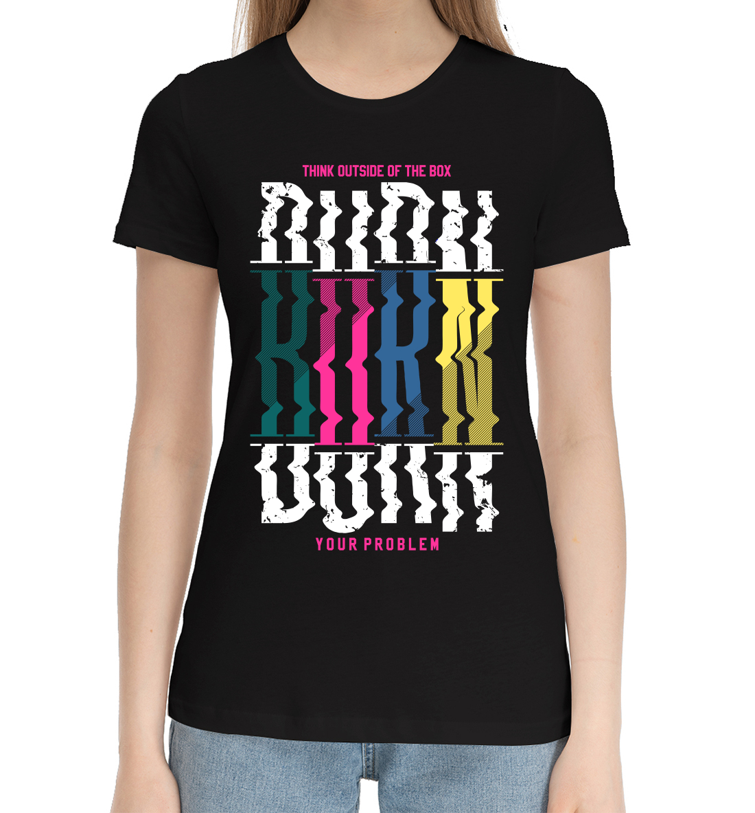
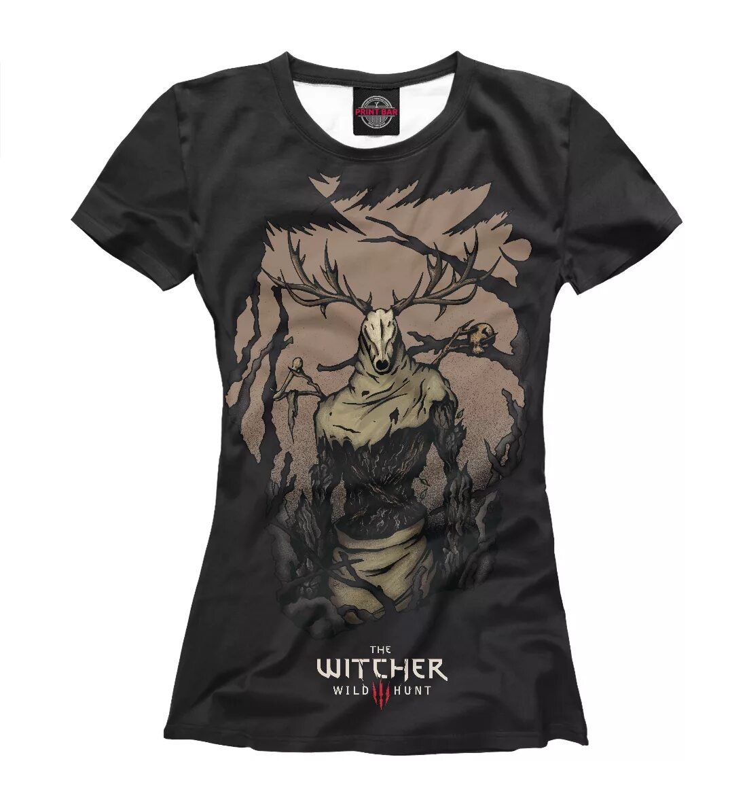
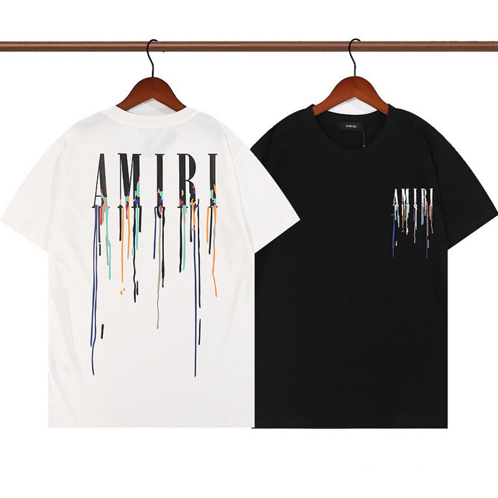
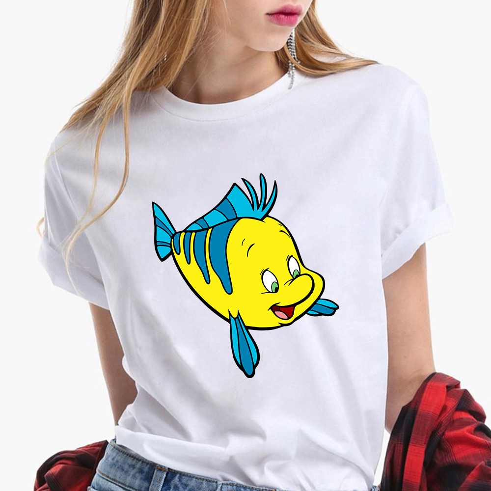
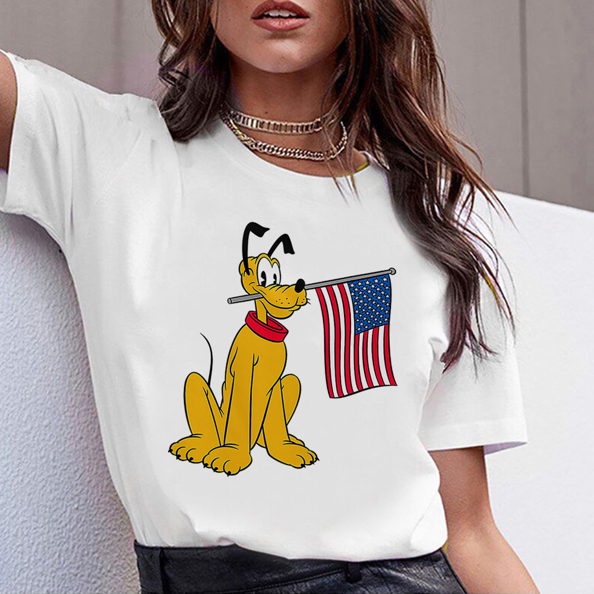
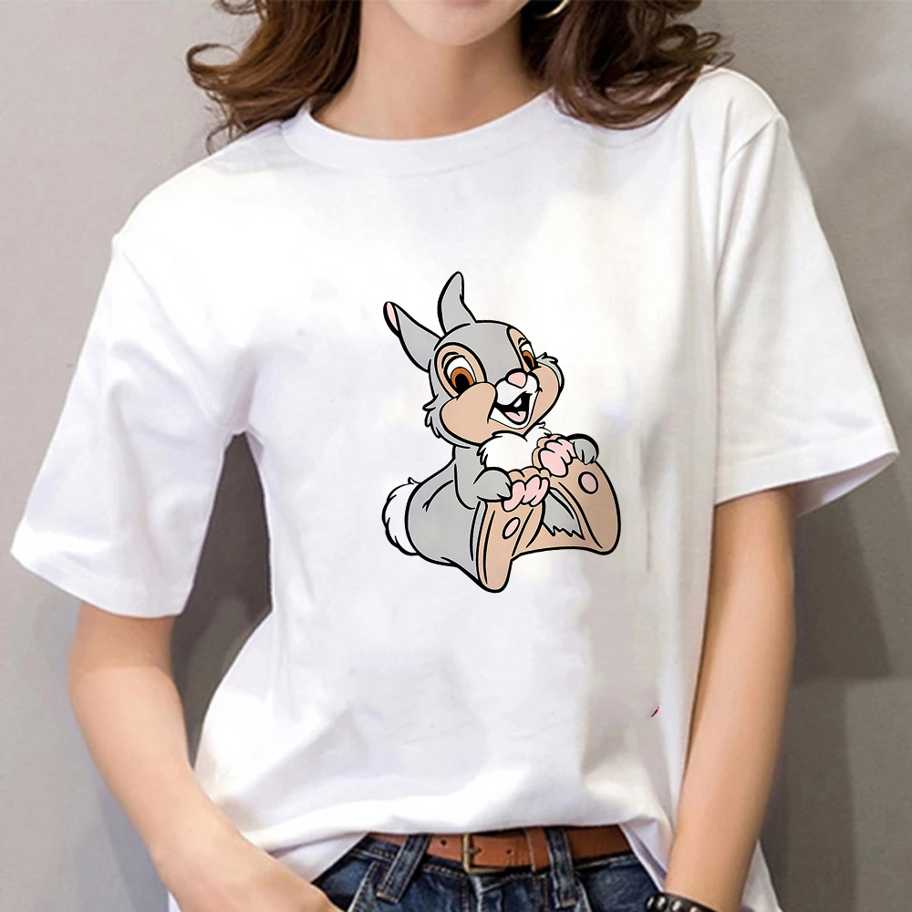
TROY Fast Rotary — 4-Color Printing Machine
TROY 4 rangli bosma mashinasi tezkor ishlab chiqarish, fon naqshlari va katta hajmdagi buyurtmalar uchun eng tejamkor va samarali yechimdir.
Imkoniyatlar:
• 4 ta rangni bir vaqtning o‘zida bosadi
• 50–70 m/min tezlik
• Kam energiya sarfi
• Oddiy dizaynlar uchun ideal
• Soddalashtirilgan boshqaruv paneli
4 rangli bosma galereyasi
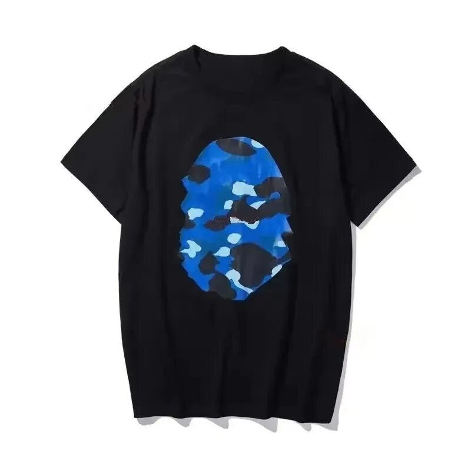
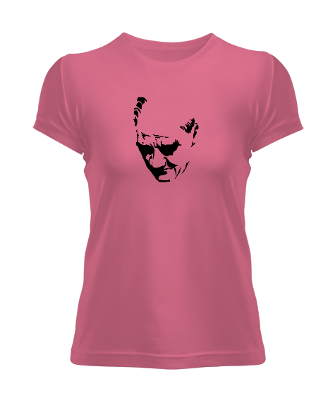
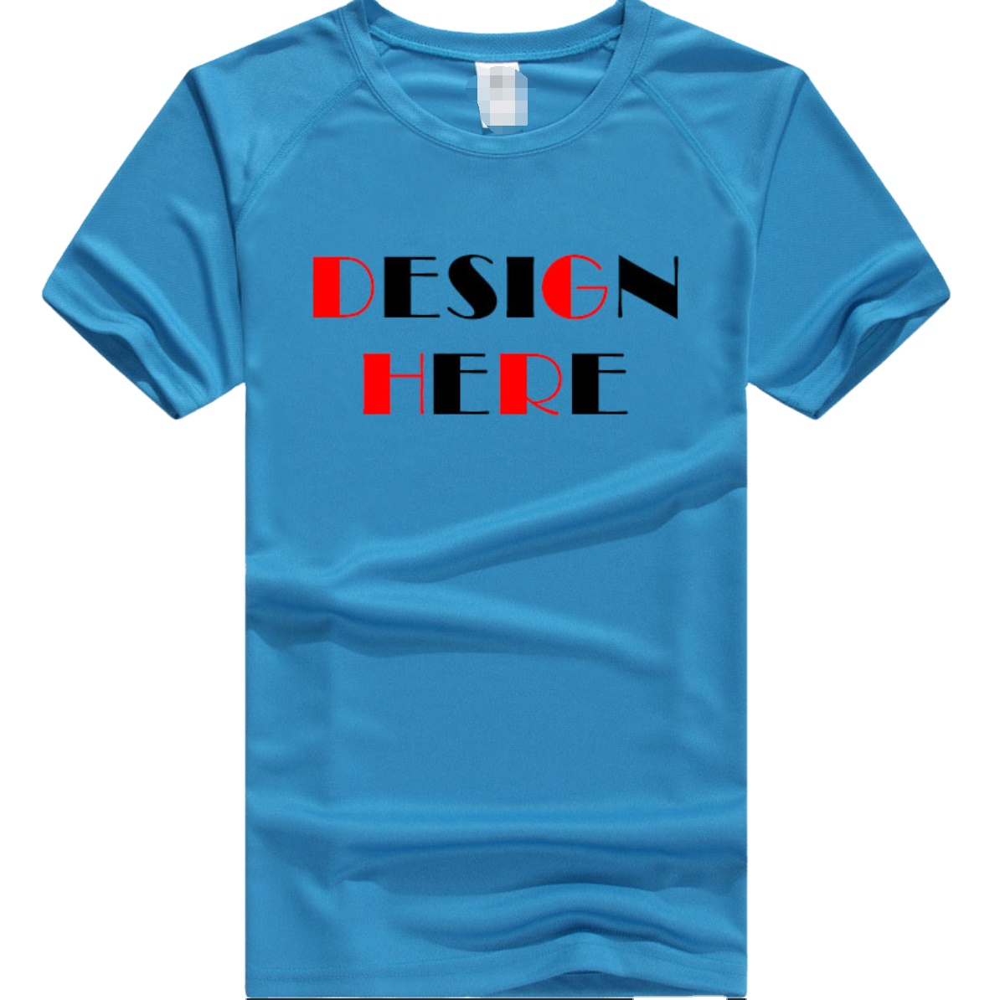
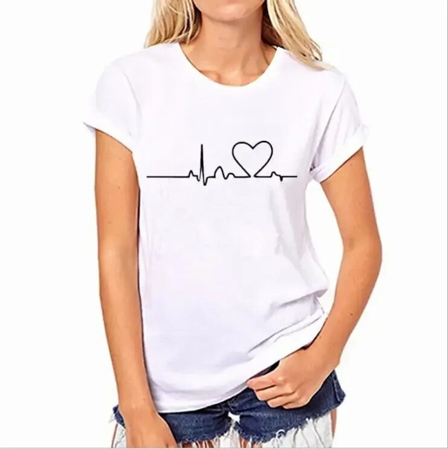
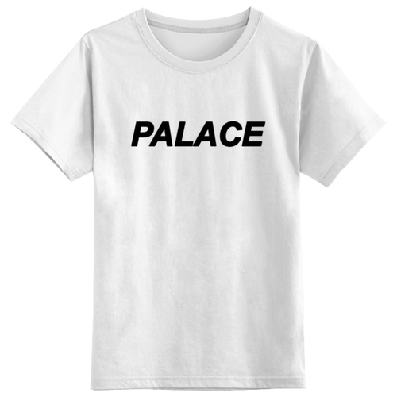

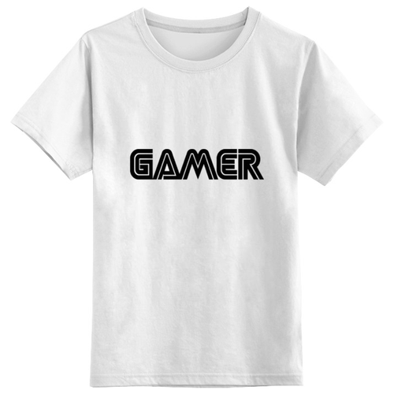